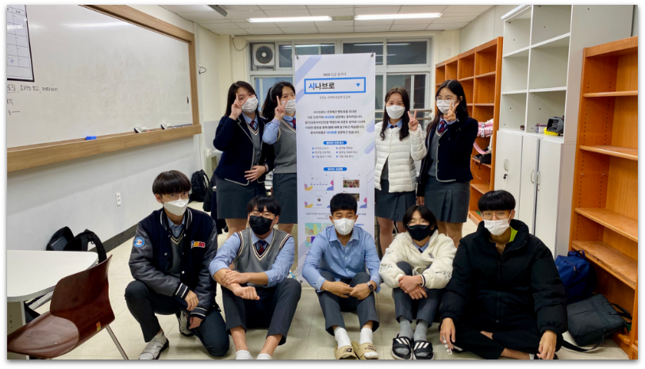
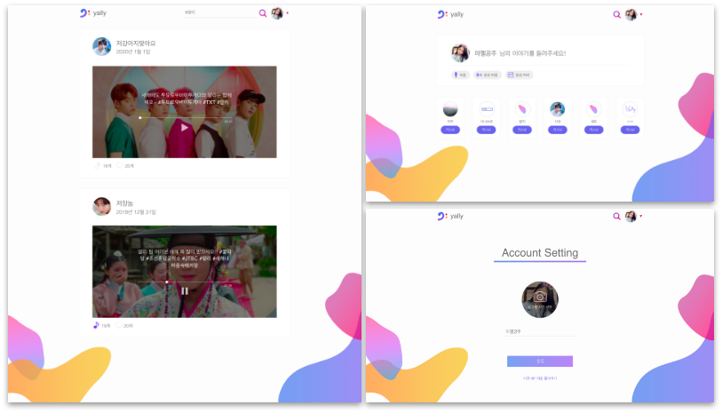
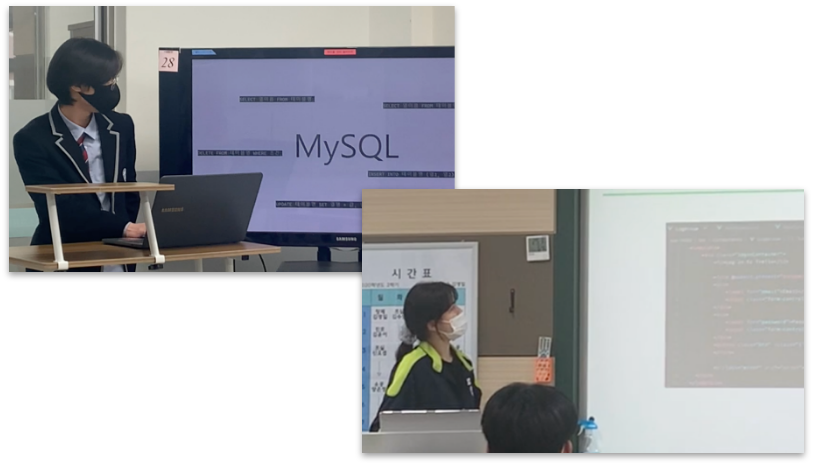

시나브로
시나브로는 대덕소프트웨어마이스터고등학교의
웹 전공 동아리입니다. 선후배간 멘토링을
통해 시나브로 성장하는 것을 목표로 합니다.
동아리 프로세스는 라이트닝 토크, 일주일
목표와 회고, 분야별 멘토링, 학년별 프로젝트가
있습니다. 학년별 프로젝트 결과물로는 2학년이
제작한 음성 SNS인 Yally, 1학년이 제작한
City Life가 있습니다. City Life는 시나브로의
1학년 학생들이 제작한 2D 도시 시뮬레이션
미니게임 웹입니다.


